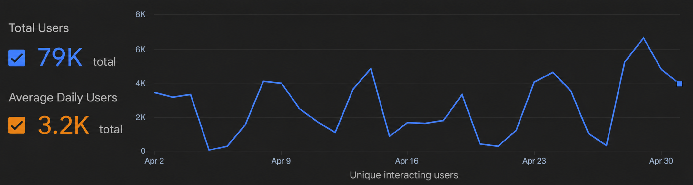

Students pay for access
Homework systems and textbook bundles, required to participate in many university classes, often lock behind paid access codes.
A textbook website with interactive explanations, practice problems, and AI tutoring that universities can adopt like Moodle, and students can use even when their school does not.
Starting with Precalculus and Calculus. Built to expand across subjects.
Lemma Math is a textbook website, not just a homework app. interactive explanations teach the concept, then problems let students practice it immediately.
Sources: BestColleges / College Board, Vendr Canvas pricing benchmarks, G2 MyLab reviews, and G2 WebAssign reviews.
Homework systems and textbook bundles, required to participate in many university classes, often lock behind paid access codes.
Lemma Math keeps the textbook role, but makes explanations interactive, adaptive, and directly connected to practice.
The old open-textbook model is slow: write chapters, recruit reviewers, update examples, repeat.
Lemma Math uses a couple expert-written textbook chapters to teach agents the standard for simple explanations, then asks them to generate new chapters, practice, hints, worked examples, and variants.
Lemma Math is not just a problem bank. It is a governed loop that turns expert foundations into verified, personalized practice.
Explains why each constraint exists (radicals, denominators, logs, etc.), then prompts the student to apply the same rule on the next line.
If the student is stuck, it generates a nearby variant (simpler numbers, single constraint first) and fades back to the original problem once they succeed.
The platform tracks where students struggle: time-on-step, hint usage, retries, common wrong answers, and which explanations reduce error rates.
Those signals automatically tune mastery estimates and prioritize improvements: generate better distractors, add targeted hints, and rewrite unclear questions.
Departments can run their own instance, customize content, and avoid access-code dependency.
Sections, assignments, progress, and weak-topic analytics stay visible to faculty.
AI can propose new explanations and problems, but instructors choose what enters a course.
Expert professors write foundational chapters that define the tone: short, simple, understandable. No formalisms.
Fine-tuned and RAG agents create variants, hints, examples, explanations, and assessments.
Formalizable math is checked through Lean; ambiguous material goes to targeted review.
Student errors and instructor feedback identify the next explanations and practice sets to strengthen.

Launch Precalculus and Calculus with clear explanations, adaptive practice, and AI tutoring.
Add more courses, instructor tools, course packs, analytics, and community-authored modules.
Extend the open-source learning model to other subjects once the content engine is proven.
If Moodle made open LMS infrastructure credible, Lemma Math can make math courseware credible and cheap.